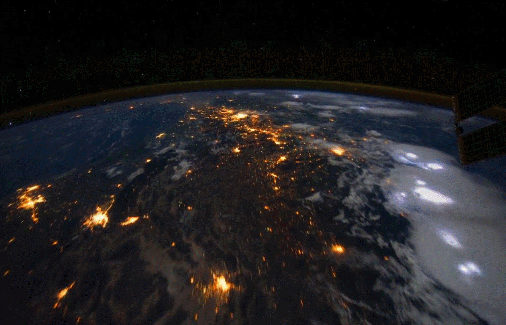

Пътешествие в
Космоса
Синята планета
Според посетилите Луната
астронавти Земята гледана
оттам, прилича на синя
топка, която плава в
бездънния черен Космос
над сивия безжизнен свят на
лунната повърхност.
Нашето място в Космоса
Ние живеем на малка планета, наричаме я Земя. Тя обикаля около звезда, която
наричаме Слънце. Около Слънцето обикалят още седем планети заедно със своите
спътници, както и много астероиди, метеориди и други тела. Всички те образуват
Слънчевата система, която е огромна – около един милион пъти по-голяма от Земята.
Слънцето е една от милиардите звезди в галактиката, наречена Млечен път. Нашата
Галактика е огромна, но е само една от многото галактики, които образуват
семейството, наречено Местна група. Местната група е малка част от огромното
пространство, заето от милиарди други галактики. Целият свят извън Земята и нейната
атмосфера наричаме Космос. Космосът е всички планети, звезди и галактики,
включително и нашата Земя, т. е. всичко съществуващо, съставят Вселената.
Земята
Нашият космически дом е малка скална
планета, около 70 % от повърхността и са
покрити с вода. Затова, погледната от
космоса, Земята изглежда синя. Тя обикаля
около слънцето, чиято светлина и топлина
достига земната повърхност за 8 минути.
Досега земята е единственото известно ни
място във Вселената, където съществува
живот.
Космическите ни съседи
Най-близките ни съседи в Космоса са
членовете на нашата Слънчева система. Те
са достатъчно близо, затова космически
сонди и хора могат да ги посетят. Поради
огромните разстояния в Космоса,
пътешествията ни до други звезди и
галактики засега са невъзможни.
Слънчева система
Включва 8 големи
планети, сред които е и Земята, няколко
планети-джуджета, спътници на планетите,
стотици хиляди астероиди, безброй
метеориди и неизвестен брой комети.
Слънчевата светлина изминава за около 6
часа разстоянието от Слънцето до Плутон-
планета-джудже в покрайнините на
слънчевата система.
Местна група
Така се нарича
групата(купът), към който принадлежи
нашата Галактика. Млечният път е втората
по големина сред 32-те галактики от
Местната група.
Млечен път
На светлинния лъч са
необходими 100 000 години, за да прекоси
нашата Галактика.

Достъпната за наблюдение Вселена
За да стигнем до най-отдалечените обекти
във Вселената, достъпни за наблюдение,
дори ако пътуваме със скоростта на
светлината, ще са ни необходими 14
милиарда години. По пътя си ще минем
покрай купове и свръхкупове от милиарди
други галактики.